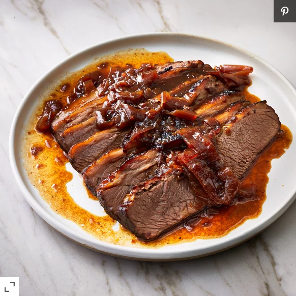

Hanukkah Brisket

Nutrition info
- Prep: 15 mins
- Cook : 4 hours and 5 mins
- Additional: 8 hours and 30 mins
- Total: 12 hours and 50 mins
- Serving: 10
- Yield: 10 servings
You clicked on this page because you were hungry for some Hanukkah
Brisket. What makes it Hanukkah, you ask? I have no idea. I don't
celebrate Hanukkah and so I don't know. But one thing I do know is
that you're going to love this sh*t.
With that being said, let's give some homework to the curious minds
that want to know what Hanukkah
is and how it is celebrated. For the rest of us lazy folks. Let's start
cooking but remember to save those curious minds a plate for when they're done reading.
Ingredients
Here are the list of Ingredients you're going to need to make amazing dish.
- 1 (4 pound) beef brisket
- 1 large onion, sliced
- 2 (14.5 ounce) cans beef broth
- 2 (15 ounce) cans French onion soup
- 3 (12 fluid ounce) cans or bottles beer (one to drink while cooking)
Instructions
To make this delicious meal, please follow the directions below...or don't. Some people
like nasty food during the holidays.
- Preheat oven to 350 degrees F (175 degrees C).
- Place a large roasting pan over medium-high heat and
sear beef brisket, fat side down at first, until browned
on all sides, about 3 minutes per side. Remove brisket and set aside.
- Place onion slices into the bottom of the roasting pan; pour 1 can beef broth,
1 can French onion soup, and 1 can beer over the onions.
- Lay the brisket into the roasting pan; pour remaining cans of beef broth,
french onion soup, and beer over the brisket. Cover the roasting
pan with a lid.
- Bake in the preheated oven for 3 hours. Remove from oven
and let stand for 30 minutes.
- Remove cooled brisket from roasting pan and wrap tightly
in aluminum foil. Pour pan juices and onion into a food storage container and cover
tightly with a lid. Refrigerate beef and pan juices overnight.
- The next day, preheat ovn to 350 degrees F (175 degrees C). Pour pan juices and onion
into a 9x13-inch baking dish.
- Unwrap the brisket, cut away any visible fat, and slice thinly across the grain of the
meat. Place brisket slices into the pan juices.
- Return to oven and bake until pan juices are thickened and meat is hot, about 45 more minutes.
- Remove from oven and enjoy. Hopefully, you know to let it cool so you don't burn your tongue (unless that's how you like your food).
Now that you're done cooking your meal, take your time to admire it before devouring it like the pig you are.
If you're curious about
what others had to say about this dish, you can click here.
and if you want to see more recipes that I have on my page, click here. Thank you to Marlene for posting this recipe
on the allrecipes website. You can find the link to her page here.
Back to top
Back to home